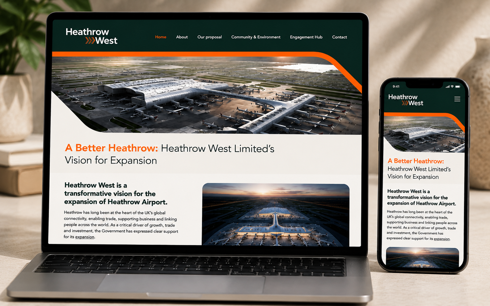
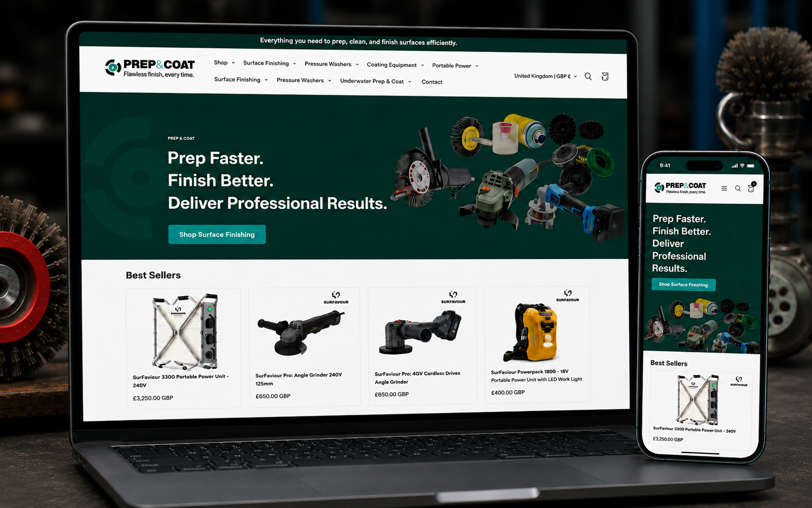
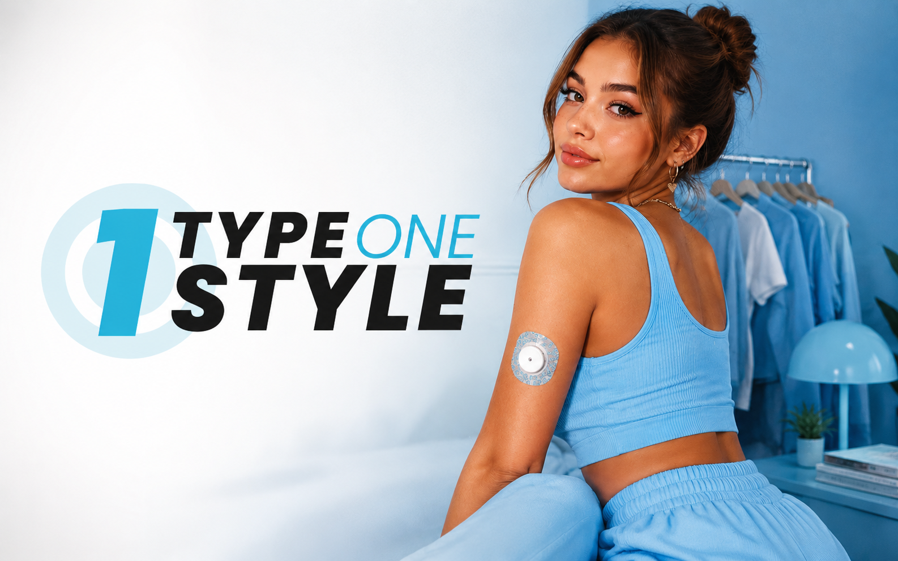
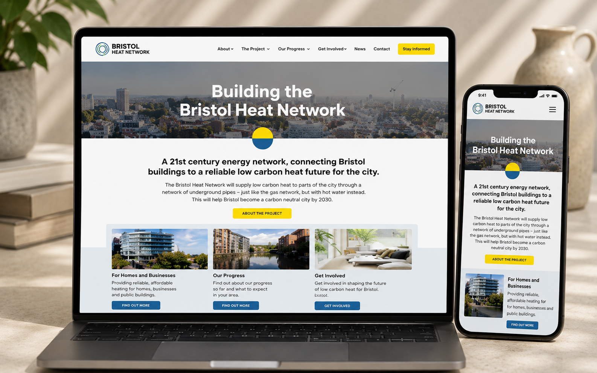
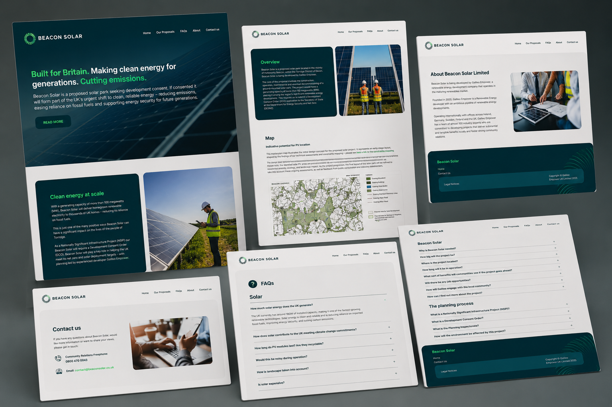
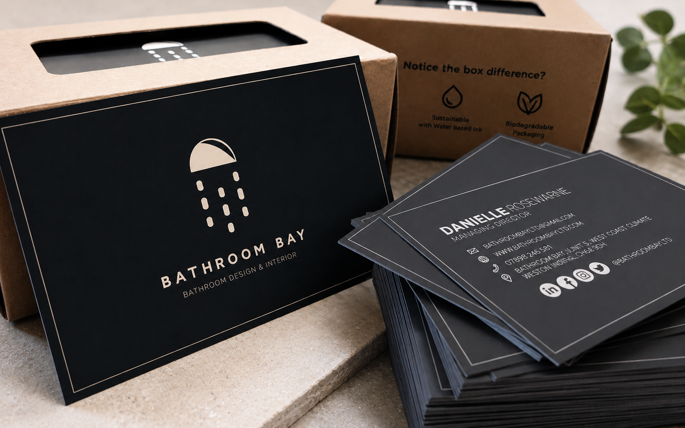
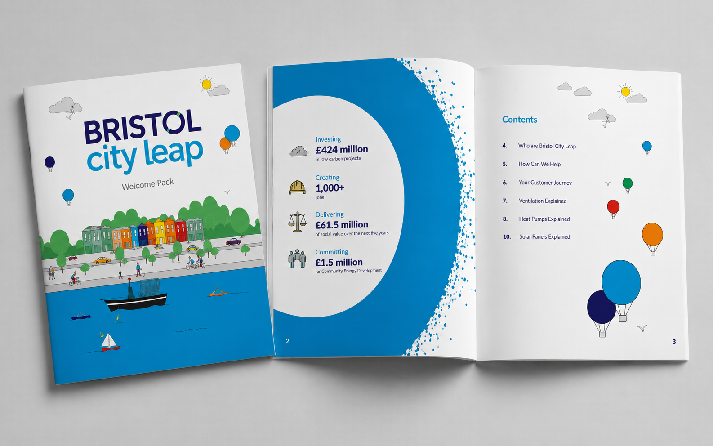

Selected Work

Heathrow West
WordPress · UX/UI · Web Design
Produced during my employment with Copper Consultancy, I designed and delivered the Heathrow West website in WordPress, helping communicate a major infrastructure project through clear content and user-focused page design.
Visit Website →
Prep and Coat
Branding · UX/UI · Shopify
Developed the brand identity and designed and delivered a Shopify ecommerce website for a specialist industrial supplier.
Visit Website →
Type One Style
Branding · UX/UI · Shopify
Led a full company rebrand and improved the Shopify customer experience through design, content and digital marketing initiatives, helping drive a 523% increase in revenue.
Visit Website →
Vattenfall
WordPress · UX/UI · Web Design
Produced during my employment with Copper Consultancy, I designed and delivered the Bristol Heat Network website in WordPress, helping communicate a major low-carbon energy programme through accessible content, intuitive user journeys and engaging page design.
Visit Website →
Beacon Solar Farm
WordPress · UX/UI · Web Design
Produced during my employment with Copper Consultancy, I designed and built the Beacon Solar website in WordPress, creating clear user journeys and engaging content to communicate a proposed solar energy project.
Visit Project →
Bathroom Bay
Branding · Logo Design · Graphic Design
Designed the Bathroom Bay brand identity, creating a modern visual system that reflects the company's focus on quality, trust and bespoke bathroom design.
Visit Website →
Bristol City Leap
Print Design · Information Design · Illustration
Produced during my employment with Copper Consultancy, I designed and produced a print-ready welcome pack for the Bristol City Leap programme, using illustration, information design and clear page layouts to communicate energy-saving measures and customer journeys.
Visit Project →
RSK Group
Motion Graphics · After Effects · Visual Storytelling
Designed and produced a motion graphic for RSK Group, communicating the environmental impact of fossil fuel consumption and highlighting the benefits of renewable energy through engaging visual storytelling.
Visit Website →